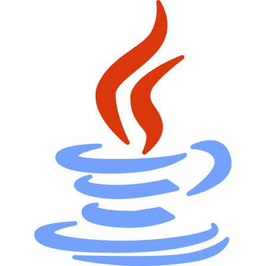

전사경영시스템
개발IPS
전사 단위 경영 업무를 다루는 사내 시스템의 신규 개발에 참여했습니다.
기여한 부분
- 담당 모듈과 구현한 기능 — 작성 예정
- 참여 기간, 팀 구성, 본인 역할 — 작성 예정
사용 기술
프레임워크 · DB · WAS 버전 확인 후 기재
전사경영·내부회계관리·상시모니터링·감사. 네 개의 사내 기간계 시스템에서 신규 개발과 유지보수를 함께 맡아왔습니다. 요구사항을 확인하고 변경 범위를 좁히는 일, 장애가 났을 때 로그로 원인을 되짚을 수 있게 남겨두는 일에 관심이 있습니다.
사내 업무와 개인 프로젝트에서 사용한 기술입니다.

Java사내 시스템이라 화면 캡처는 공개하지 않고, 담당 범위를 도식으로 정리해 첨부할 예정입니다.
전사 단위 경영 업무를 다루는 사내 시스템의 신규 개발에 참여했습니다.
내부회계관리제도 운영을 지원하는 시스템의 유지보수를 수행했습니다.
이상 거래·통제 항목을 상시 점검하는 시스템의 유지보수를 수행했습니다.
감사 업무에 필요한 정보를 수집·조회하는 시스템의 유지보수를 수행했습니다.
Expense Tracker · 개인 가계부 웹 애플리케이션
고정지출·수입·계좌를 등록하고 다가오는 결제를 집계하는 가계부입니다. 업무에서 익힌 사내 시스템의 구조 — 공통코드, 논리삭제, 요청 로그, 권한별 메뉴 — 를 직접 설계해보는 것이 목적이었습니다.
상황 · 해결 · 알게 된 점
BusinessException과 Bean Validation 메시지로 제한하고, 나머지는 일반 문구로 치환해 상세는 서버 로그에만 남겼습니다.
알게 된 점
핸들러 범위를 좁히는 일이 함께 필요했습니다. 뷰를 반환하는 핸들러의 예외는 원본을 다시 던져 기본 오류 페이지로 넘기고, 인증·인가 예외도 다시 던져 Security 필터가 401/403으로 처리하게 뒀습니다. 그러지 않으면 모든 오류가 500 JSON으로 바뀝니다.
null이라, 실패한 요청이 로그 테이블에 INFO·200으로 기록됐습니다.
해결
DispatcherServlet이 request attribute에 보존하는 원본 예외를 읽어 복원하고, 예외가 있으면 상태코드를 500으로 보정한 뒤 레벨을 판정했습니다.
알게 된 점
로그를 남기는 코드가 실패해 요청 자체를 깨뜨리면 안 되므로, 적재 로직 전체를 감싸 경고 로그만 남기고 통과시켰습니다.